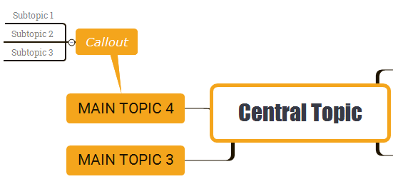

Callout
Callout is a funny way for additional text. In XMind 7, Callout is not only a shape, but also a real attachment to a topic. It also has sub-topics.
To add callout to a topic:- Select a topic.
- Click Callout iconon the toolbar.
- Now you can type some text and change the callout properties in Properties window.
- You can also enter "Tab" to add subtopics to it.
